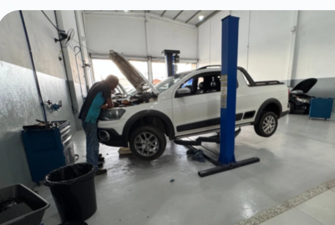
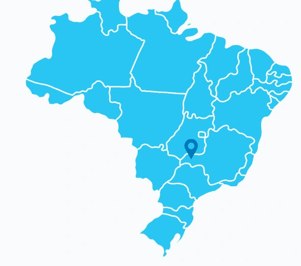

Quem Somos
Especialistas em ar-condicionado automotivo para veículos leves e pesados
Na UseAr, somos referência em climatização automotiva para veículos leves e pesados. Com uma equipe experiente e altamente qualificada, garantimos um atendimento diferenciado, com serviços de alta qualidade e uso exclusivo de peças originais.
Nosso compromisso vai além da excelência técnica: buscamos sempre oferecer um ambiente seguro e saudável para nossos colaboradores, tanto na oficina quanto em atendimentos externos. Atuamos com responsabilidade, adotando práticas que respeitam o meio ambiente e a saúde de todos os envolvidos.


Presença regional
Atendimento especializado em Uberlândia e região
Com ampla experiência no mercado de climatização automotiva, a UseAr é referência em serviços de ar-condicionado e direção hidráulica para veículos leves e pesados. Atuamos com agilidade, excelência e atendimento personalizado, sempre com peças originais e garantia de qualidade.
Nossa estrutura técnica nos permite atender com eficiência tanto na oficina quanto em campo, seja em fazendas, transportadoras ou onde o cliente precisar, oferecendo manutenções preventivas e corretivas com rapidez e segurança.
Presente na rotina de quem precisa manter seus veículos e máquinas funcionando com alto desempenho, a UseAr é sinônimo de confiança e compromisso em Uberlândia e toda a região.
Missão, visão e valores
Missão
Conhecer as necessidades e oportunidades do mercado e de nossos clientes e oferecer soluções técnicas com Qualidade, Segurança e respeito ao Meio Ambiente.
Visão
Destacar-se no mercado com uma atuação sólida, sempre buscando satisfazer as expectativas dos nossos clientes.
Valores
Garantir um ambiente de trabalho seguro e saudável para os colaboradores, adotando medidas eficazes para reduzir riscos à saúde, segurança e ao meio ambiente.